10:14
韩国釜山的甘川文化村庄素有“釜山的圣托里尼”之称，2012年11月27日在日本福冈举行的亚洲都市景观奖的颁奖仪式上，甘川文化村庄被选为亚洲最美丽的村庄……这里曾经是20世纪50年代韩国战争后难民避难於此地,后来在釜山“胡同艺术工程”的推动下，成为知名的文化景点。一个半山腰上色彩斑斓的小村落。
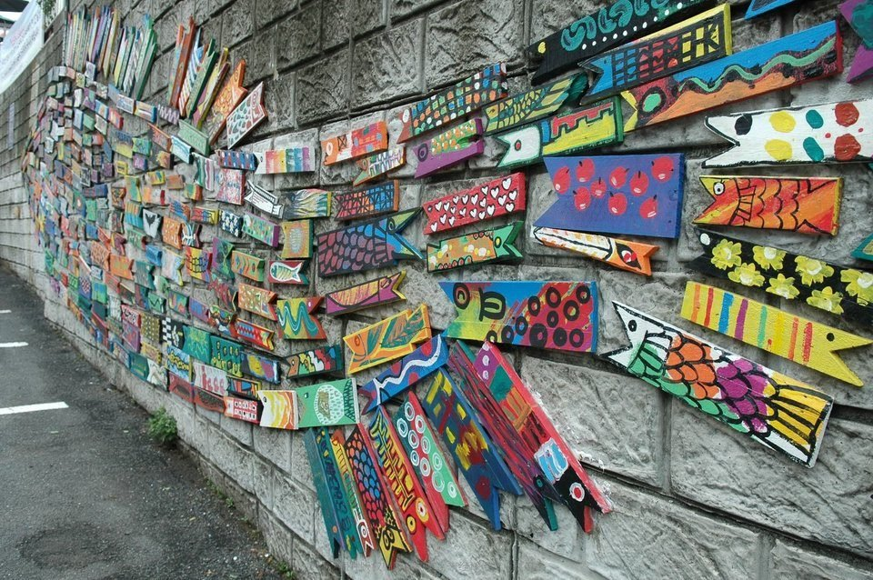
韩国釜山的甘川文化村庄素有“釜山的圣托里尼”之称，2012年11月27日在日本福冈举行的亚洲都市景观奖的颁奖仪式上，甘川文化村庄被选为亚洲最美丽的村庄……这里曾经是20世纪50年代韩国战争后难民避难於此地,后来在釜山“胡同艺术工程”的推动下，成为知名的文化景点。一个半山腰上色彩斑斓的小村落。
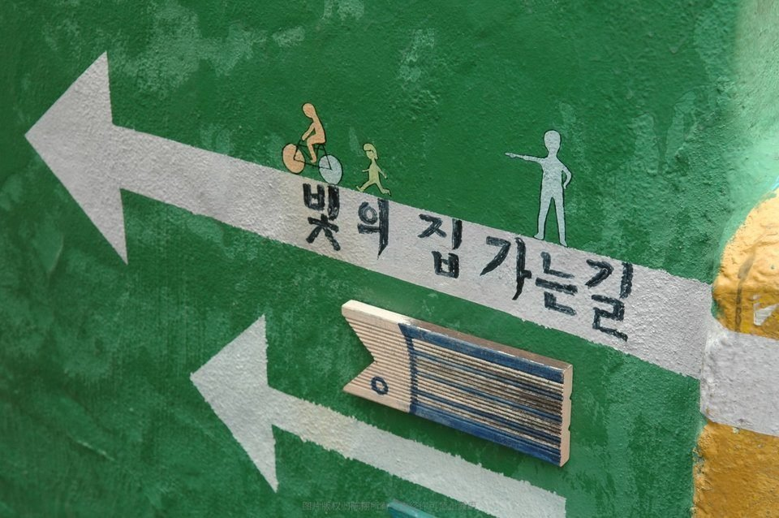
甘川文化村庄坐落在山坡地带，其阶梯式的居住形态和连接角角落落的迷宫般的胡同使其成为旅游名地。这里每年接待的游客要达到7万人次，从2008年起，釜山门岘洞的居民与志愿者、学生们一起开始在门岘洞各房屋以及墙壁上作画。曾一度濒临拆除危机的灰墙胡同在300多人的画笔下，摇身变成了拥有48幅光鲜漂亮的粉彩壁画胡同。每个细节都会带来心动的感觉。
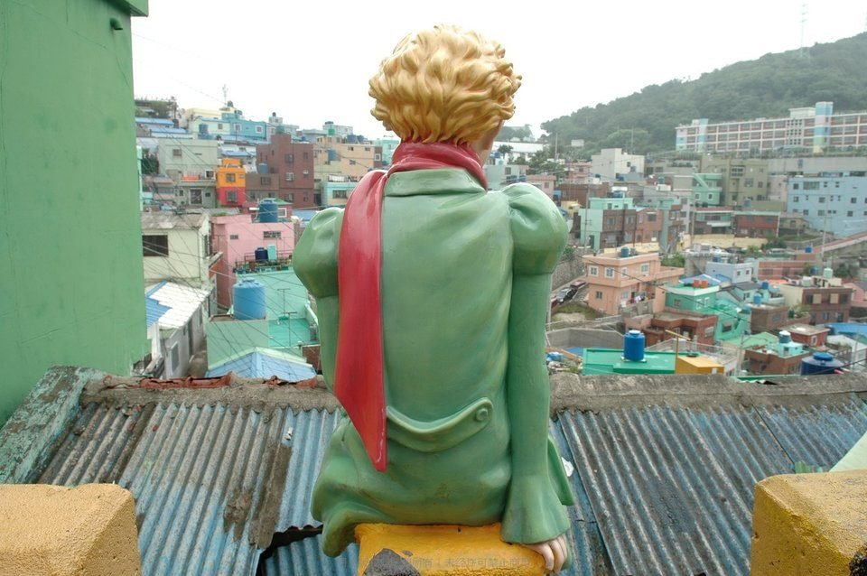
世界最美胜地圣托里尼岛是爱琴海最璀璨的一颗明珠，柏拉图笔下的自由之地，码头附近有许多悬崖，无数的白色小屋依山而建。房屋建筑在高地上，屋墙全是白色，屋顶深蓝色，与天空、海洋混成一体，这是地中海独有的景观……釜山的圣托里尼甘川文化村庄的房屋建设前后也互不遮挡，将具有异域风情的阶梯式村庄原型完好地保存下来，同时居民还自发组建了居民协会、经营咖啡厅、创建报纸、开发各种。
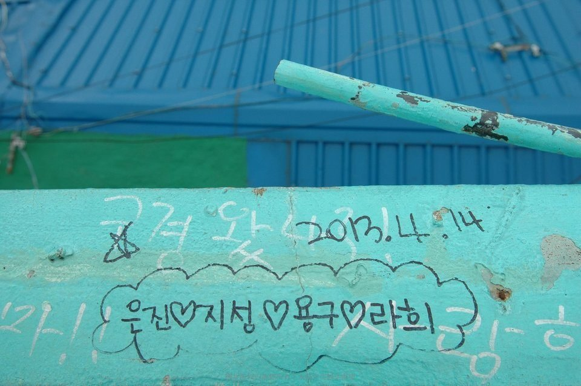
爱你一生一世，韩国人表现出来的浪漫远比中国人开放多了。浪漫是什么？就是男女在一起时，情和景，身和心的结合所产生的那种美妙的意境。曾经有一次中国客人投诉韩国某很有品质的酒店，原因是夜晚一关灯睡觉，房间的墙上出现了荧光绿的一段韩国文字，客人以为了种种，结果叫来酒店负责人翻译，是“我爱你”之类的浪漫话语……虽然被投诉，但时不时想起这段都觉得那个家伙挺能搞！
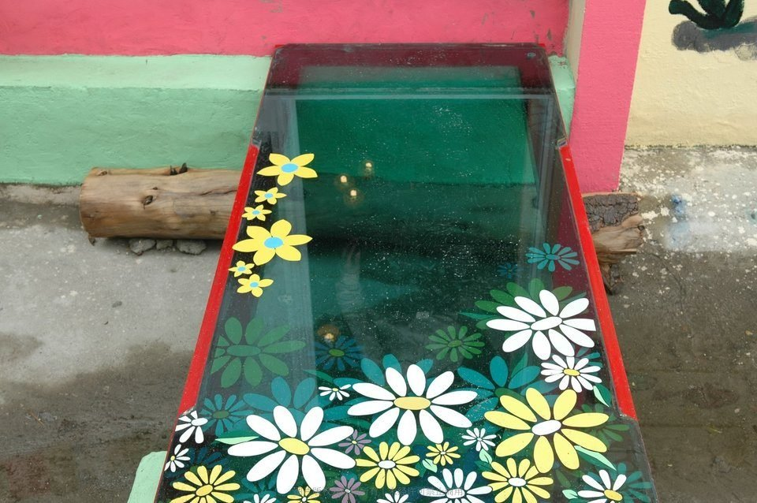
文化创意最核心的东西就是“创造力”，一个咖啡厅的走廊都让我感到颇为用心。站一站走一走拍一拍，怎么看都觉得新鲜，只是一点，花了太多时间欣赏，忽略了这是一间咖啡厅，连走廊都这么艺术，猜想他们的咖啡也会很特别吧……另外，感觉老板应该是女人，如果是个男人那也太娘了！
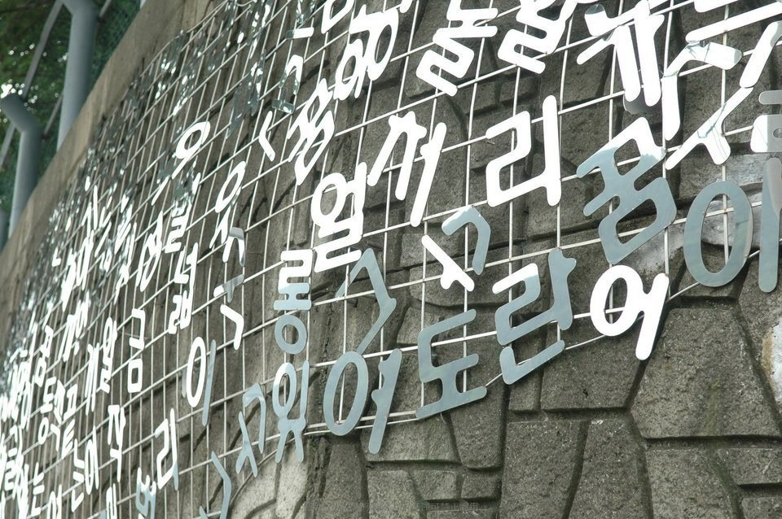
银色属于消色，和任何颜色都搭配，把原本平庸的墙变得很抢眼。韩国文字是1446年朝鲜时期由世宗大王和集贤殿的学者们制定、公布的具有独创性的文字。据考证，在此之前，韩文是用汉字书写的，发音参考了中文的音韵学，是根据身体的发音器官和天、地、人创造出来的字母。经常有导游指着景福宫的窗格和阳光的倒影说，世宗大王看了影子发明了文字……
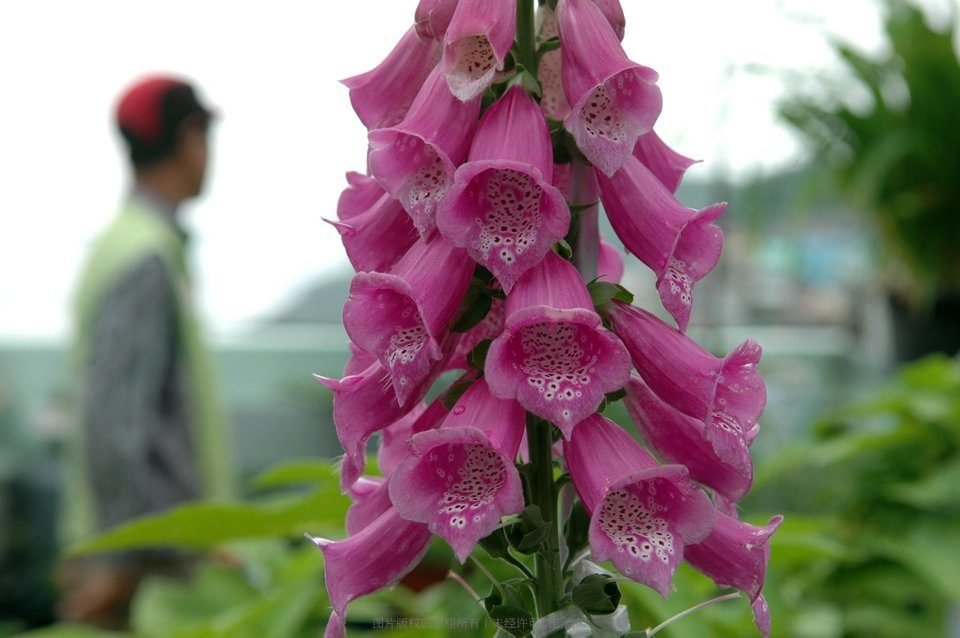
一个韩国大叔养的花，在甘川文化村，鲜花都稍显逊色，因为这里就是个艺术花园……这里明显是个老龄化非常严重地村庄，连中心展馆都是重现老大叔泡澡。但是从墙壁上颜色的运用和图案的创造力，看到的是勃勃生机，是对新生事物的认同。
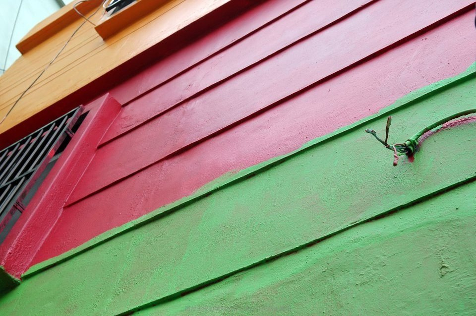
简单往往是最有冲击力的
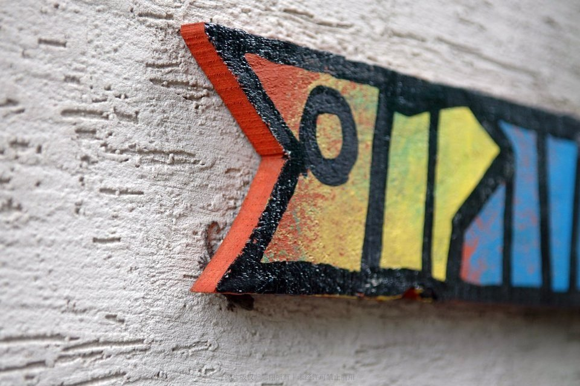
我猜想最初源于路标路牌，这里是个新载体新符号，这可能就是文创的魅力。很多背包客，手拿一幅地图，像寻宝一样地在甘川行走，走到标志性景点的时候，还会盖上一枚纪念戳，集齐全部的纪念戳也会很有成就感吧，可惜我先前的功课做的不好，不知还可以这样玩。下次一定补上！
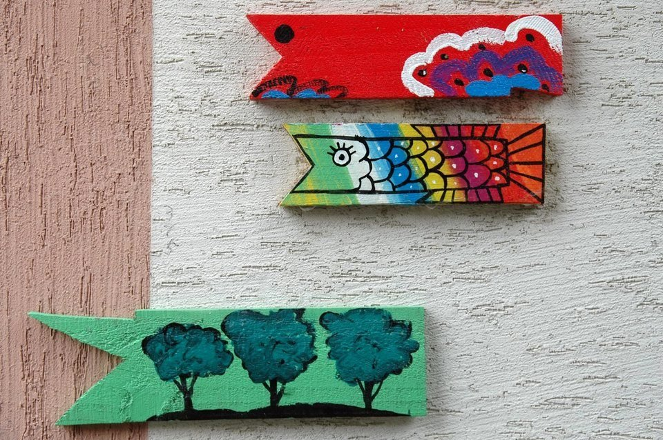
灰色，4天色，久旱时务农者的希望。所以，解释为希望来临，甘雨将致；灰色衬托下的颜色格外耀眼，这也许就是否极泰来的意义吧……
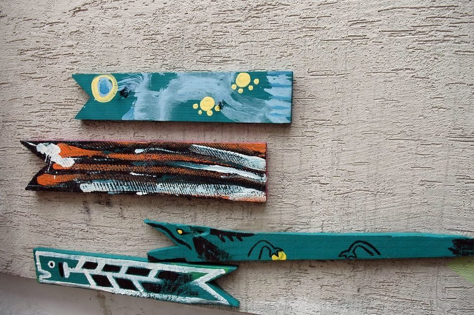
反差也好和谐也好，在甘川文化村随手都可以捻来
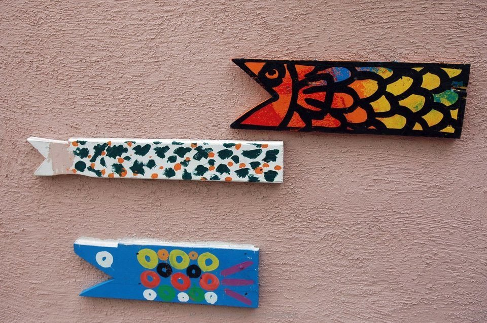
全是鱼，釜山是个海港城市，靠水吃水，艺术审美也会很地缘。在釜山如果不吃海鲜，就算白来了，札嘎其市场就是个不错的选择，我们一行三人，点了一支帝王蟹、一份生鱼片、一个海鲜火锅、一组什锦拷贝壳，才花了300多，人均100多，谁说韩国物价贵？
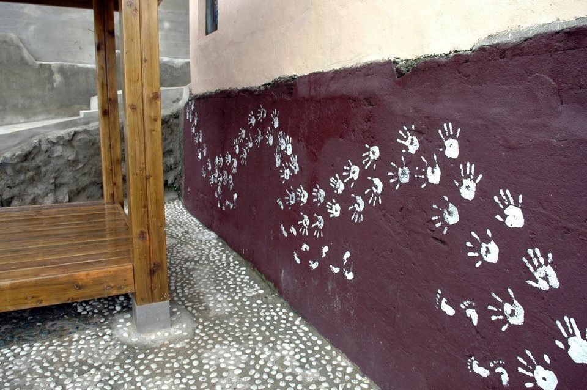
吹吹风谈谈人生，孔子追求的状态。连大爷大妈吹风的地方都有小设计。整个甘川不仅改变了普通以高层和大型建筑形成的现代都市的模式，也打破了由政府单方面主导的都市开发过程，整个村庄的发展企划均有军民参与其中，是一个非常具有革新性质的典范。亚洲最美的村庄，釜山的圣托里尼-甘川文化村真的不虚此行！